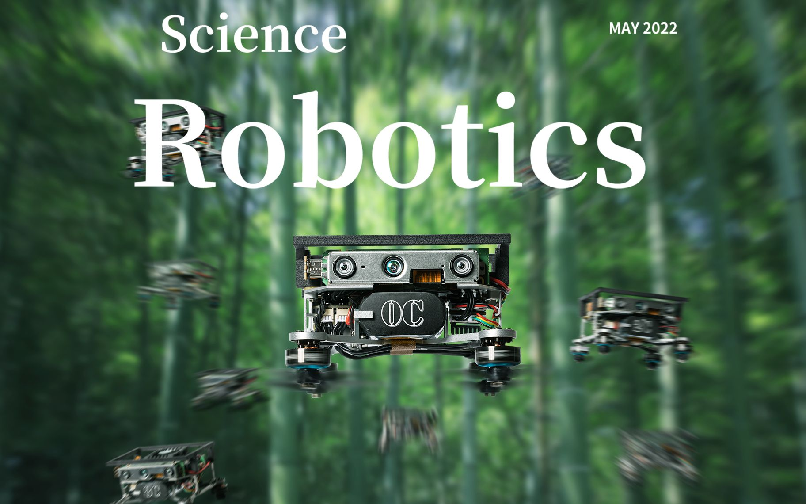

浙大智能机器人完成自主编队成群飞行
作者：陆健 - 光明日报

一群微型智能空中机器人穿梭于竹林中，时而灵巧地掠过低矮灌木丛，时而交叉飞行变换队形，就像是林中小鸟翩翩起舞相互追逐……由浙江大学研发，在未知复杂环境中实现机器人成群结队飞行的成果，于北京时间5月5日刊登在机器人领域权威期刊《科学·机器人》上，并被选为期刊5月封面论文。
这项成果由浙江大学控制科学与工程学院、湖州研究院团队研发完成，论文第一作者为浙江大学控制科学与工程学院博士研究生周鑫，通讯作者为高飞博士和许超教授。
大规模的机器人空中编队表演早已屡见不鲜，但在未知复杂环境中的成群结队飞行，一直被看作是机器人与人工智能领域的一大技术瓶颈。在两年多的研究中，浙大科研团队解决了未知复杂环境下机器人单机与群体的智能导航与快速避障方法等一系列核心技术，将只能在电影里面看到的场面带到现实世界。
“人字形的大雁、井然有序的鸽群，仰望天空，自然界中飞鸟的集群总让我们思考，它们是如何保持队形的。”许超说，让机器人像鸟儿一样能够成群自由地飞翔，这是我们及国际同行们苦苦追寻的最高境界。
通过集体的协同努力，浙大团队研发出小巧轻便、自主可控又能成群结队的飞行系统。单个空中机器人只有手掌大小，比一听可乐的重量还要轻。
浙大研发的这款新型机器人在仅使用机载视觉、机载计算资源的情况下，实现了在野外树林复杂环境下感知周围障碍物、定位自身位置及生成飞行路径，以及多智能体通信等多项关键技术突破。“我们让机器人看得懂世界，主动避开障碍物，实现群体飞行。”高飞说。
“我们还为空中机器人打造了一个‘智慧大脑’。”许超说，“尽管处理器只有拇指大小，但是它能够独立计算处理飞行过程中遇到的海量信息。把物理世界的运动信息表现成一系列的数学问题，关键是要识破复杂问题背后隐秘的特殊数学结构，化繁为简，利用捉襟见肘的机载计算资源完美破题。”
在研发过程中，团队在智能化、网络化、自主化等多方面技术发展中取得了突破。谈及未来应用，高飞认为，在火灾等搜救场景中，小型集群机器人能够更好实现搜救目标，减少搜救人员风险；在地形勘探中，也可以快速对人员无法到达的区域进行建模。“生活中有很多场景都能用到我们这项技术，比如扫地或服务机器人，如果装上了我们研发的‘智慧大脑’，就会更加聪明。”